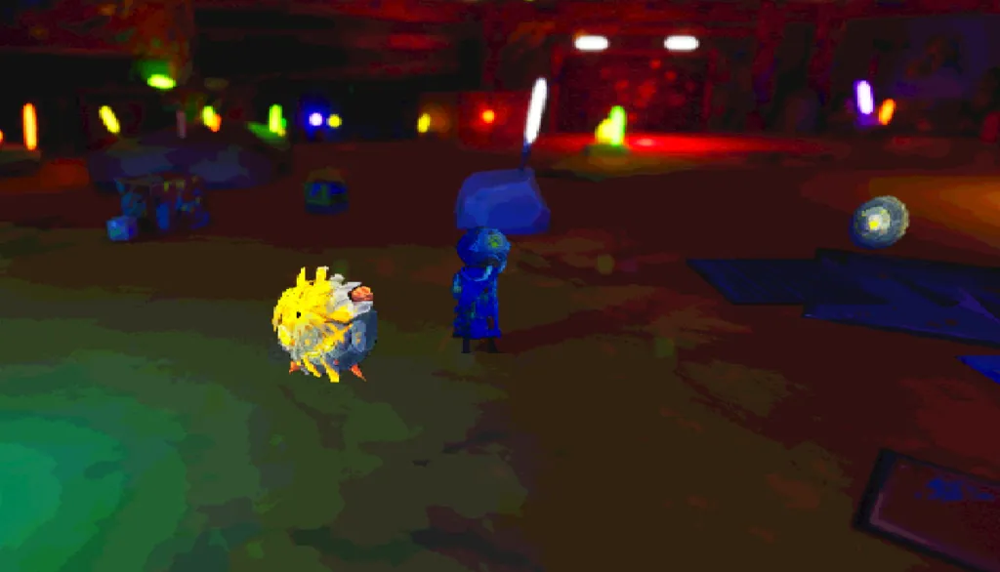
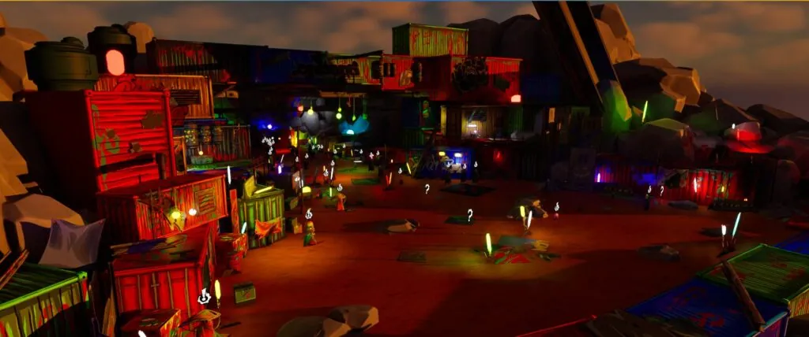
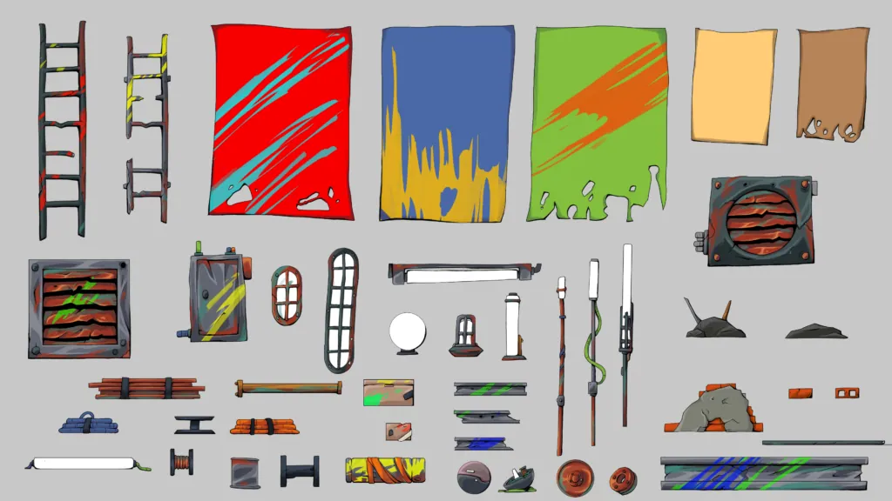
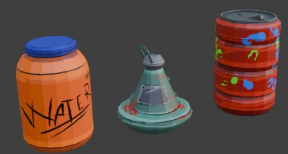
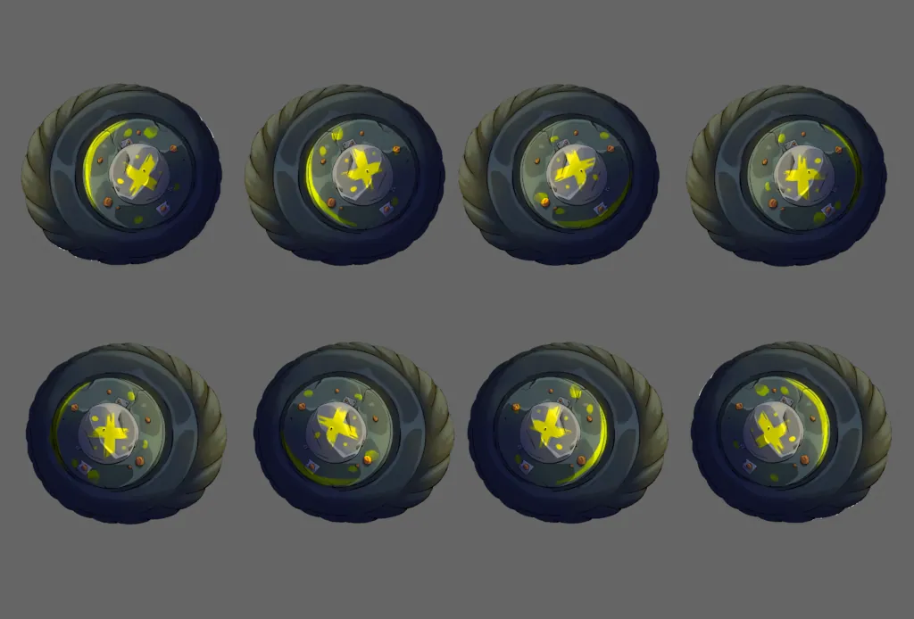

03 / 03Ferrugo
Semester game prototype · Unreal Engine 5 · 2025/2026
An open-world action prototype set on a desolate future colony, switching between 2D and 3D play.
After a catastrophe known as the Great Dawn, the abandoned colony has lost its technology and contact with other colonies, and its survivors have split into rival factions.

- Context
- Semester project, Ateliér Game Design, FMK UTB
- Year
- 2025/2026
- Engine
- Unreal Engine 5
- Play
- Open world, action, 2D/3D switching
Description and images from the official FMK UTB showcase page.
Project images
-

2Gameplay -

3Level preview -

42D game assets -

53D game assets -

6Character sprite sheet